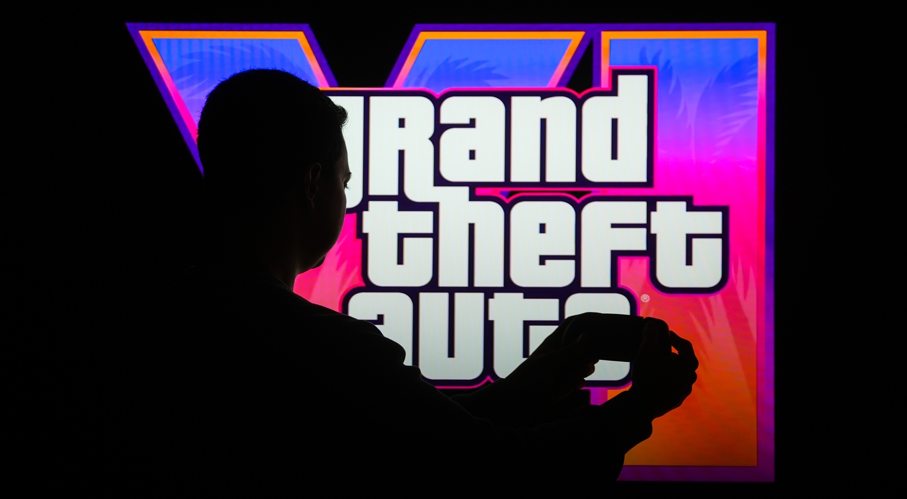

Вечером 20 ноября компания Neuralink Илона Маска выложила в своей официальный канал в X двухминутное видео: участник клинических испытаний управляет Grand Theft Auto VI одной силой мысли. Подпись к ролику предельно скромная — «Playing GTA VI with a Neuralink». На кадрах игрок ведёт катер под мостом в узкий заросший канал и выполняет задание по сбору посылок, а рядом на экране — живой дашборд декодирования нейросигналов — виртуальные кнопки геймпада загораются ровно в тот момент, когда система считывает намерение. Ни имени пациента, ни модель консоли в компании не назвали.
В основе — имплант N1 и система Telepathy: устройство считывает активность области мозга, отвечающей за движения руки, и переводит воображаемые движения в настоящие команды — курсор, клики, игровые действия. Пациентам с параличом не нужно ничего нажимать: достаточно представить движение. Показательно, что демо вышло через день после мирового релиза GTA VI (19 ноября на PlayStation 5 и Xbox Series X|S) — на волне самого громкого игрового запуска года.
Параллельно Neuralink ждёт регуляторного разрешения для Blindsight — импланта, который компания разрабатывает для возвращения зрения; статус «прорывного устройства» FDA присвоила ему ещё в 2024 году, и, по словам Маска, одобрение на подходе. Отдельного пресс-релиза на этот раз не было — первоисточником ролика служит официальный канал Neuralink в X, его и указываем в ссылках.
Похожим направлением — интерфейсами «мозг–компьютер» для возвращения людям движения — занимается нижегородская компания «Моторика»: её биопротезы и управляемый нейроинтерфейсом экзоскелет уже проходят испытания с пациентами с повреждениями спинного мозга. Игры силой мысли российские разработчики пока не демонстрируют, но технология в стране развивается.